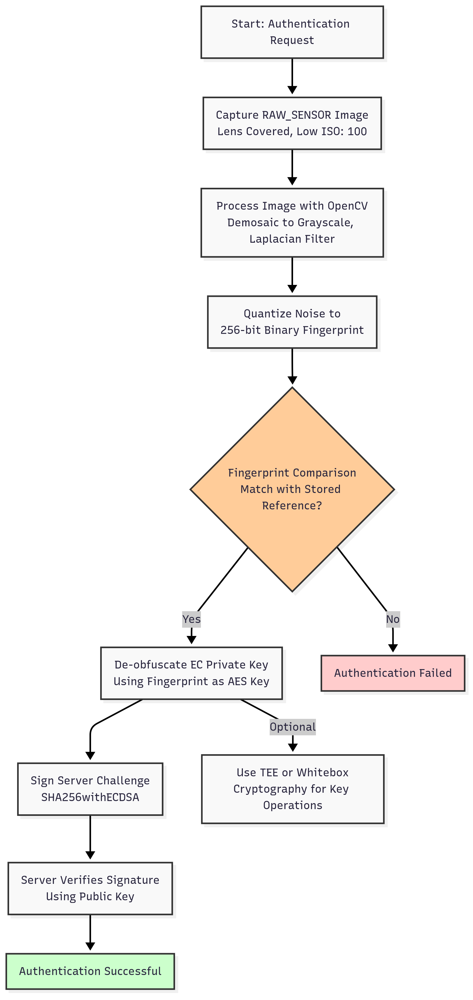

In the evolving landscape of digital security, leveraging smartphone hardware for Multi-Factor Authentication (MFA) offers a robust solution. This blog explores a novel approach that uses a smartphone’s camera sensor imperfections as a Physical Unclonable Function (PUF) to generate secure, device-bound passkeys. Below is a step-by-step technical breakdown, a flowchart, and sample SDK code to illustrate the implementation, showcasing its potential in modern authentication systems.
Step-by-Step Process
1. Capture Raw Sensor Data
The process begins by accessing the smartphone’s camera via the Camera2 API to capture a RAW_SENSOR image (DNG format). To isolate sensor noise, the capture occurs with the lens covered, using low ISO (e.g., 100) and short exposure (e.g., 1ms). This minimizes external light interference, highlighting the sensor’s unique imperfections caused by manufacturing variations in the silicon wafer.
2. Extract Noise Patterns
Using OpenCV, the raw image is converted to a grayscale matrix (e.g., via COLOR_BayerRG2GRAY demosaicing). A high-pass filter, such as a Laplacian, isolates high-frequency noise components. These noise patterns, unique to each sensor, are quantized into a binary fingerprint (e.g., 256 bits) by thresholding pixel values against the mean noise level.
3. Generate and Obfuscate Private Key
An elliptic curve (EC) key pair is generated using the Android Keystore with the secp256r1 curve. The private key is encrypted (obfuscated) using the sensor fingerprint as an AES key. The obfuscated key is stored securely in the Keystore, ensuring it’s only accessible when the correct fingerprint is provided.
4. Authenticate Using Sensor Fingerprint
During authentication, the app recaptures the sensor fingerprint and compares it to the stored reference. If they match, the fingerprint de-obfuscates the private key, which signs a server challenge (e.g., using SHA256withECDSA). The server verifies the signature with the public key, confirming device possession.
5. Enhance with TEE or Whitebox Cryptography
For added security, key operations can occur in a Trusted Execution Environment (TEE) if available. Alternatively, whitebox cryptography protects the key on devices without TEE, ensuring resilience against malware or device compromise.
Process Flow Diagram
Below is a flowchart illustrating the camera-based MFA process, making it easier to visualize the steps:
Sample Code
Below is a simplified Kotlin implementation of the MFA SDK, focusing on capturing the camera sensor fingerprint and performing authentication. This code demonstrates how the steps above are translated into a practical Android solution.
package com.example.mfa
import android.content.Context
import android.hardware.camera2.*
import android.media.ImageReader
import android.os.Build
import android.os.Handler
import android.os.HandlerThread
import android.util.Base64
import androidx.annotation.RequiresApi
import org.opencv.android.OpenCVLoader
import org.opencv.core.CvType
import org.opencv.core.Mat
import org.opencv.imgproc.Imgproc
import java.nio.ByteBuffer
import java.security.KeyPairGenerator
import java.security.KeyStore
import javax.crypto.Cipher
import javax.crypto.spec.SecretKeySpec
import kotlin.coroutines.resume
import kotlin.coroutines.resumeWithException
import kotlin.coroutines.suspendCoroutine
class MFASDK(private val context: Context) {
private val keyStore = KeyStore.getInstance("AndroidKeyStore").apply { load(null) }
private val keyAlias = "MFAKey"
private val cameraManager = context.getSystemService(Context.CAMERA_SERVICE) as CameraManager
private val handlerThread = HandlerThread("MFACameraThread").apply { start() }
private val handler = Handler(handlerThread.looper)
private var sensorFingerprint: ByteArray? = null
init {
if (!OpenCVLoader.initDebug()) throw IllegalStateException("OpenCV initialization failed")
}
@RequiresApi(Build.VERSION_CODES.M)
suspend fun initialize(): Result = suspendCoroutine { continuation ->
try {
if (!keyStore.containsAlias(keyAlias)) {
// Generate EC key pair
val keyPairGenerator = KeyPairGenerator.getInstance("EC", "AndroidKeyStore")
keyPairGenerator.initialize(
KeyGenParameterSpec.Builder(
keyAlias,
KeyProperties.PURPOSE_SIGN or KeyProperties.PURPOSE_VERIFY
).setDigests(KeyProperties.DIGEST_SHA256)
.setAlgorithmParameterSpec(java.security.spec.ECGenParameterSpec("secp256r1"))
.build()
)
val keyPair = keyPairGenerator.generateKeyPair()
captureSensorFingerprint { result ->
result.onSuccess { fingerprint ->
sensorFingerprint = fingerprint
// Obfuscate private key with fingerprint
val cipher = Cipher.getInstance("AES/ECB/PKCS5Padding")
val secretKey = SecretKeySpec(fingerprint.copyOf(16), "AES")
cipher.init(Cipher.ENCRYPT_MODE, secretKey)
val obfuscatedKey = cipher.doFinal(keyPair.private.encoded)
keyStore.setEntry(
"$keyAlias-obfuscated",
KeyStore.SecretKeyEntry(SecretKeySpec(obfuscatedKey, "AES")),
null
)
continuation.resume(Result.success(Unit))
}.onFailure { continuation.resumeWithException(it) }
}
} else {
continuation.resume(Result.success(Unit))
}
} catch (e: Exception) {
continuation.resumeWithException(e)
}
}
@RequiresApi(Build.VERSION_CODES.M)
private fun captureSensorFingerprint(callback: (Result) -> Unit) {
try {
val cameraId = cameraManager.cameraIdList.first()
cameraManager.openCamera(cameraId, object : CameraDevice.StateCallback() {
override fun onOpened(camera: CameraDevice) {
val imageReader = ImageReader.newInstance(640, 480, ImageFormat.RAW_SENSOR, 1)
val captureSessionCallback = object : CameraCaptureSession.StateCallback() {
override fun onConfigured(session: CameraCaptureSession) {
val builder = camera.createCaptureRequest(CameraDevice.TEMPLATE_STILL_CAPTURE)
builder.addTarget(imageReader.surface)
builder.set(CaptureRequest.CONTROL_AE_MODE, CaptureRequest.CONTROL_AE_MODE_OFF)
builder.set(CaptureRequest.SENSOR_SENSITIVITY, 100) // Low ISO
builder.set(CaptureRequest.SENSOR_EXPOSURE_TIME, 1000000L) // 1ms
imageReader.setOnImageAvailableListener({ reader ->
val image = reader.acquireNextImage()
val fingerprint = processRawImage(image)
image.close()
reader.close()
session.close()
camera.close()
callback(Result.success(fingerprint))
}, handler)
session.capture(builder.build(), null, handler)
}
override fun onConfigureFailed(session: CameraCaptureSession) {
session.close()
camera.close()
callback(Result.failure(Exception("Camera configuration failed")))
}
}
camera.createCaptureSession(listOf(imageReader.surface), captureSessionCallback, handler)
}
override fun onDisconnected(camera: CameraDevice) {
camera.close()
callback(Result.failure(Exception("Camera disconnected")))
}
override fun onError(camera: CameraDevice, error: Int) {
camera.close()
callback(Result.failure(Exception("Camera error: $error")))
}
}, handler)
} catch (e: Exception) {
callback(Result.failure(e))
}
}
private fun processRawImage(image: android.media.Image): ByteArray {
// Extract raw data
val buffer: ByteBuffer = image.planes[0].buffer
val rawData = ByteArray(buffer.remaining())
buffer.get(rawData)
// Process with OpenCV
val rawMat = Mat(image.height, image.width, CvType.CV_16U)
rawMat.put(0, 0, rawData)
val grayMat = Mat()
Imgproc.cvtColor(rawMat, grayMat, Imgproc.COLOR_BayerRG2GRAY)
val noiseMat = Mat()
Imgproc.Laplacian(grayMat, noiseMat, CvType.CV_16S, 3)
// Quantize to 256-bit fingerprint
val fingerprint = ByteArray(32)
val noiseData = DoubleArray(noiseMat.total().toInt())
noiseMat.get(0, 0, noiseData)
val threshold = noiseData.average()
for (i in 0 until 32) {
var byte = 0
for (j in 0 until 8) {
val index = (i * 8 + j) % noiseData.size
byte = byte or (if (noiseData[index] > threshold) 1 else 0 shl (7 - j))
}
fingerprint[i] = byte.toByte()
}
rawMat.release()
grayMat.release()
noiseMat.release()
return fingerprint
}
@RequiresApi(Build.VERSION_CODES.M)
suspend fun authenticate(challenge: String): Result = suspendCoroutine { continuation ->
captureSensorFingerprint { result ->
result.onSuccess { fingerprint ->
if (!sensorFingerprint.contentEquals(fingerprint)) {
continuation.resumeWithException(SecurityException("Fingerprint mismatch"))
return@captureSensorFingerprint
}
// De-obfuscate key and sign challenge
val obfuscatedKeyEntry = keyStore.getEntry("$keyAlias-obfuscated", null) as KeyStore.SecretKeyEntry
val cipher = Cipher.getInstance("AES/ECB/PKCS5Padding")
val secretKey = SecretKeySpec(fingerprint.copyOf(16), "AES")
cipher.init(Cipher.DECRYPT_MODE, secretKey)
val privateKeyBytes = cipher.doFinal(obfuscatedKeyEntry.secretKey.encoded)
val keyFactory = java.security.KeyFactory.getInstance("EC")
val privateKey = keyFactory.generatePrivate(java.security.spec.PKCS8EncodedKeySpec(privateKeyBytes))
val signature = java.security.Signature.getInstance("SHA256withECDSA").apply {
initSign(privateKey)
update(challenge.toByteArray())
}.sign()
continuation.resume(Result.success(Base64.encodeToString(signature, Base64.DEFAULT)))
}.onFailure { continuation.resumeWithException(it) }
}
}
fun release() {
handlerThread.quitSafely()
}
} Code Explanation
- Initialization: Generates an EC key pair and captures the initial sensor fingerprint to obfuscate the private key using AES.
- Fingerprint Capture: Uses Camera2 API to capture a raw image with low ISO, processes it with OpenCV to extract noise, and quantizes it into a 256-bit fingerprint.
- Authentication: Recaptures the fingerprint, verifies it, de-obfuscates the private key, and signs a server challenge.
- Dependencies: Requires
androidx.camera:camera-camera2andorg.opencv:opencv.
To use this SDK, add camera permissions (<uses-permission android:name="android.permission.CAMERA" />) and dependencies in your Android project. The full implementation would include TEE support and fuzzy extractors for production use.
Technical Advantages
- Unclonable Security: The sensor’s PUF ensures keys are device-bound, resisting cloning even if the device is fully compromised.
- Usability: The process is seamless, requiring only a momentary camera capture without user interaction.
- Cost-Effective: Leverages existing smartphone hardware, eliminating the need for dedicated tokens.
- Compliance: Aligns with FIDO, PSD2, and SCA standards for strong authentication.
This project demonstrates my expertise in integrating hardware-based cryptography and image processing into secure mobile applications, paving the way for next-generation MFA solutions.
Explore more of my work on advanced authentication in my portfolio or reach out via the Contact section!